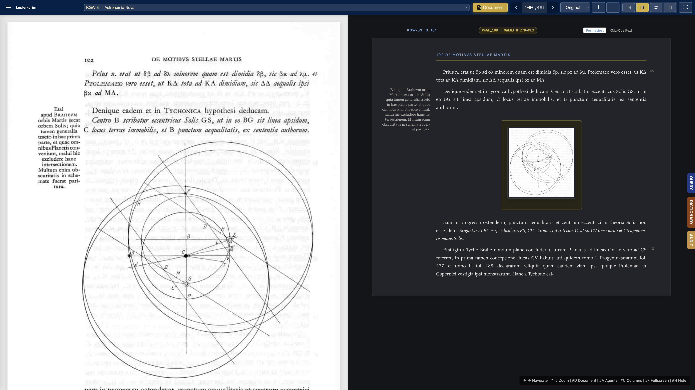
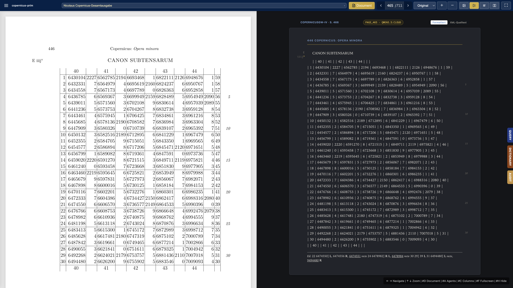
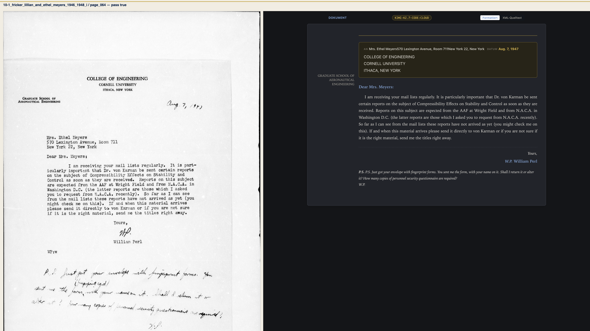

2 The page language
One grammar core, one prompt composer, one margin stylesheet, one letter assembler.
Every PDAI page, whatever its collection, is written in one page language. A collection may add elements, margin types and measures of its own; it cannot rename or drop a word of the common vocabulary. The same vocabulary is read by the OCR prompt, the normalizer, the audit and the viewer, from one file.
This chapter is the reference for that language. The other chapters and the skills point here instead of restating it.
2.1 The layers
| Layer | File | What it holds |
|---|---|---|
| Core | pipeline/ai-scholar/src/ai_scholar/schemas/pdai-core.mod |
marginal and its closed type list, meta with the partitur stamp, figure, the renditions of hi |
| Tables | …/schemas/pdai-table.mod |
table, tr, th, td; a margin may stand beside a row or in a cell |
| Page | …/schemas/page.dtd v4.0 |
page, header, main, p, fn, footnotes; every content model is a parameter entity |
| Letter page | …/schemas/page_letter.dtd v4.2 |
a wrapper of page.dtd: letter-part, head, body, closing, enclosure and apparatus families |
| Collection | collections/<c>/config/page.dtd |
entity overrides, the collection’s own elements, then the include |
A collection grammar is a wrapper. It sets the entities it needs and declares only what the canonical page lacks; the first declaration of an entity or an attribute wins, so the overrides come before the include:
<!ENTITY % marginal-type.extra "| doc-id"> <!-- KGW 19 -->
<!ENTITY % main.content "document-entry | p | marginal | figure | table | equation | section | parno">
<!ENTITY % kepler-page SYSTEM "../../page.dtd">
%kepler-page;Deployment writes a flattened copy of each grammar to the collection root on PDAI-1 (python -m ocr_runner.page_language deploy --collection <c>), with a GENERATED header that names the source files and their hash, so no reader resolves relative includes across volumes.
Measured. The restructuring was checked against every page XML on PDAI-1 (python -m ocr_runner.page_language census): of 159,170 pages, 93,279 were valid against their grammar before and 95,751 after; no document lost a valid page (2,444 documents compared). Reports: pipeline/ocr-runner/reports/page-language/census-{before,after}.json.
2.2 Margins
NoteThe marginal
Everything printed in a margin of the page is a <marginal side="…" type="…">. It stands directly before the first word of the printed line it is printed beside, inside that paragraph, whichever margin it is in. Beside a table row it is a child of that <tr> — first for the left margin, last for the right — and the viewer draws it as a gutter cell of the row. side is the margin where it is printed.
The type is one word of a closed list. The list and its split are parameter entities of the core, so the prompt, the audit and the viewer read the same words:
| Kind | Type | Printed as |
|---|---|---|
| marker | line-number |
printed line count (5, 10, 15 …) |
| marker | folio |
manuscript folio or page of an earlier print (22v, Bl. 14) |
| marker | symbol |
a sign (cross, dagger, hand) |
| note | topic |
the author’s or editor’s marginal gloss or lemma |
| note | reference |
a cross-reference or source citation in the margin |
| note | date |
a date printed in the margin |
note, marginal-note, label and gloss are forbidden aliases; the shared normalizer maps them to topic, maps an untyped numeral to line-number, and maps <note place="margin…"> of archival prompts to <marginal type="topic">. An untyped prose marginal stays untyped, because the page does not say whether it is a gloss or a reference. Collection extension types are declared by their wrapper, with their gloss in the wrapper’s comment: doc-id (KGW 19) and entry-number (medieval-sec).
2.2.1 Display
The viewer renders a marginal as an inline span with data-side and data-kind (marker or note). pdai-page.css sets it position: absolute with no top, so it keeps the height of its own line and moves sideways into the margin. The sheet reserves a margin only on a side that carries marginals — a narrow marker gutter, a note column, or both, markers outermost. A post-render pass in repro-xml.js pushes a marginal down when it would overlap the previous one on the same side, and lets the sheet grow when a long note runs below the last paragraph. Notes are unboxed.
A collection page.css sets only the measures (--pdai-note-width, --pdai-note-gap, --pdai-marker-gutter) and the typography of its types; pdai-coherence reports any rule that redeclares position, display, float or offsets of a margin (COH-CSS-MARGIN-GEOMETRY).


2.3 The prompt composer
The OCR prompt of every collection is built by one function, ocr_runner.cure_config.compose(collection, model, volume=…). Its layers, in fixed order:
- page language —
agents/infrastructure/ai-instructions/ocr/pdai-page-language.j2, rendered with the vocabulary of the collection’s grammar (marker and note types, extension types, forbidden aliases); - base —
collections/<c>/ai-instructions/<prefix>.base.j2; - volume —
<prefix>.<volume>.j2, optional; - engine —
<prefix>.<engine>.j2, optional; engine notes only; - volume.engine —
<prefix>.<volume>.<engine>.j2, optional.
The base holds the Jinja slots page_language and engine_notes; it also receives page_grammar, the admitted content of every element read from the DTD, for bases that list what may stand inside what. The engine key of a model comes from the one table at the top of collections/ocr_catalog.yaml (qwen3.8 → qwen38, qwen3-vl → qwen3vl, kimi → kimi, gemini-3.8 → gemini38). The instruction family of a collection is named in its cure.yaml or, without one, in its catalog entry.
Instruction families live in the collection folder beside config/. The central store keeps only the universal fragment and generic templates (archival-letter-page.j2, full_page_scholarly.j2 …). Superseded versions are kept in ai-instructions/versions/<engine>/. ai-scholar’s own templates, which it renders without includes, carry the fragment as a generated block kept in step by python -m ocr_runner.page_language sync-ai-scholar (--check fails when a block has drifted).
2.4 Partitur control
Every page a runner saves carries the partitur that produced it:
<meta partitur="kepler-ocr@3f400c0df6fa" layers="page-language,base,qwen38"
overlay="kepler-ocr.qwen38.j2" engine="qwen3.8:27b-mlx" model="qwen3.8:27b-mlx" …/>partitur is the family prefix and the first twelve hex digits of the SHA-256 of the composed instruction with the page variables left as placeholders, so it is the same for every page of a model and volume and changes with any layer.
pdai-partitur check --collection kepler-prim # per model: layers, hash, missing overlays, lint
pdai-partitur census --collection kepler-prim --write-statuscheck exits non-zero when a model of the chain composes base-only or an overlay fails the lint (grammar declared in an overlay, a margin type outside the DTD). census counts, per document, the pages per model and partitur and merges them into status.json (ocr_partitur); legacy pages count under legacy:<instruction_template>. pdai-audit --all runs the census.
State on 2026-09-28: check reports four models without an engine overlay — gemini-3.8-flash on medieval-sec and karman-nachlass, kimi and gemini-3.8-flash on kepleriana-munich-2024. They compose base-only until an overlay is measured.
2.5 Content control and dual read
A partitur tells an engine what to write; it cannot tell anyone whether the engine did. For that the pipeline keeps an independent witness of every page: Apple Vision (fastimage --mode ocr, on device, about 0.5 s per page, no API cost) reads the scan into lines with their geometry. Vision structures nothing and misses signs such as †, but it is reliable about where text stands. ocr_runner.content_control turns that reading into a census:
| Census item | Read from | Example (KGW 18) |
|---|---|---|
| margin items and their line | a number past the block edge, merged at the line end or standalone | 190 beside “Nunc igitur his dilucidatis” |
| outer margin column | one short token right after a line number | the italic folio after 360 |
| unread marks | ink in the margin columns that no Vision line explains | the † beside “Mitto salutis loco” |
| printed page | the number of the running head | 12 on scan page 10 |
| table rows | several narrow cells at one height | the “(Randbemerkung:” insets |
| figure zones | a run of narrowed lines, or a gap no table fills | the lunar diagram on p. 12 |
| note zone | numbered lines (“351) …”) in the lower quarter | the line note on p. 16 |
Vision reads KGW’s old-style figures as letters (“1o”, “4o”, “so”, “2°”, “390»”); a token counts as a margin number when it hangs into the margin, and is then read as 10, 40, 50, 20, 390v. The line counts of a page form one series; a reading outside it (“3720” for the folio 372v) is kept as uncertain and never inserted. When more than a quarter of the lines open with a number (a register), the page is a list and has no margin census. A figure zone must hold ink outside the boxes of the text lines, so the blank beside an indented address or signature block is not a figure.
check(xml, census) measures a reading against it (missing, extra and misanchored margin items, flat tables, figures without zones, notes the scan does not print); repair_margins anchors margin numbers at the first word of their line, places a row’s number in its <tr>, moves a sign to the unread mark on its side, corrects the type (a sign is a symbol, a number that is not a line count is a folio) and removes notes and paragraphs the scan does not print; crop_figures cuts the zones out of the scan as page_NNN_fig_K.png when their number equals the number of <figure>s. What the census cannot read it reports and never fills: an italic folio that Vision and both engines misread stays a mark_unread gap.
python -m ocr_runner.dual_read runs two engines on the same page, each under its own composed partitur, and scores both readings with the audit, the text-validity check against Vision (schema_audit.text_validity) and the content check. It lists where the two readings diverge — margin items, tables, figures, notes, and the word windows in which they disagree, each with the reading Vision supports — takes the better one (structure score plus half a point for every divergent window in which Vision supports the other reading; a text gap that resembles the transcription character by character is Vision misreading Fraktur, not lost text), repairs it, sets printed-page from the census, and writes only with --write (the old page is kept as page_NNN.xml.v<n>). Reports go to collections/<c>/quality/dual-read/<doc>/page_NNN.json; --reuse re-measures saved readings after a change of the repairs without calling an engine; --escalate 3 runs the second engine only when the first reading, repaired, still scores 3 or more.
KGW 18, 2026-09-28: the two pages that opened the iteration (scan 10 and 14) and five random pages (seed 20260928), both engines under their current partitur, qwen3.8 at full image scale:
| Printed page | qwen3.8:27b-mlx | kimi-k2.7-code:cloud | Vision supports (qwen : kimi) | After repair |
|---|---|---|---|---|
| 12 | 68.9 s, score 12 | 12.1 s, score 3 | 1 : 15 | 0 |
| 16 | 72.9 s, 6 | 15.4 s, 4 | 2 : 9 | 1 (illegible folio) |
| 49 | 72.7 s, 2 | 15.4 s, 4 | 7 : 17 | 4 (a line count at a Fraktur line) |
| 113 | 84.0 s, 5 | 20.2 s, 3 | 2 : 34 | 0 |
| 236 | 73.6 s, 3 | 13.5 s, 2 | 5 : 16 | 1 |
| 303 | no well-formed page | 15.1 s, 5 | — | 0 |
| 579 (register) | 113.9 s, 15 | 20.8 s, 15 | 0 : 8 | 15 (note-zone flags of the list layout) |
Kimi’s reading is chosen on all seven pages. Qwen anchors right-margin numbers at the end of their line; Kimi invented one footnote (p. 12, repeating the word before the note sign). Both are caught by the census, not by the other engine. The first run of the pilot failed on qwen3.8 for every page: the composed prompt plus the image exceeded Rapid-MLX’s 8192-token vision cap (HTTP 400). Image scale does not help — the prompt text was the excess — so the qwen38 overlay was condensed (v7, 11.8k to about 5k characters) with every measured failure mode kept once.
2.6 Letters on the same layers
Letter pages speak page_letter.dtd v4.2, a wrapper of page.dtd. Records are assembled by one assembler, python -m ocr_runner.assemble_letters --collection <c> --doc <d> --write: consecutive letter parts with the same nr are one letter, nr="cont" continues the open letter, nr="anhang" is its enclosure. Records go to <data>/<doc>/segments/letters/letter_<nr>/letter_<nr>.xml and letters_assembled.jsonl, validated against the collection’s letter_record.dtd (or letter.dtd v4.2).
| Collection | Letters | of them multi-page | Valid |
|---|---|---|---|
| kepler-prim KGW 13–16 | 631 | 442 | 631 |
| pirckheimer (korrespondenz) | 233 | 182 | 233 |
| kepleriana-munich-2024 | 59 | 0 | 59 |
Pirckheimer’s legacy assembler (scripts/assemble_xml.py, letter.dtd v1) is retired. The production letters_resolved tables were not rebuilt from these records: for kepler-prim that would introduce a correspondence register the query router does not have today, a change that needs its own golden run.
Karman-nachlass is the test of the letter layer for a flat collection (docs/cure/letter-dtd.qmd, pilot 2). Its partitur is karman-letter-ocr.base.j2 + karman-letter-ocr.kimi.j2 over the page language, with the collection’s convention names mapped to universal elements and the admitted children of every letter element read from the DTD.

2.7 Commands
| Task | Command |
|---|---|
| vocabulary of a document’s grammar | python -m ocr_runner.page_language vocab --collection kepler-prim --doc kgw-19 |
| validity of every page | python -m ocr_runner.page_language census --out census.json |
| deploy flattened grammars and page.css | python -m ocr_runner.page_language deploy --collection <c> |
| regenerate the viewer’s display DTD | python -m ocr_runner.page_language display |
| refresh ai-scholar fragment blocks | python -m ocr_runner.page_language sync-ai-scholar [--check] |
| partitur check / census | pdai-partitur check … / pdai-partitur census … |
| assemble letters | python -m ocr_runner.assemble_letters --collection <c> --doc <d> [--write] |
| dual read with Vision control | python -m ocr_runner.dual_read --collection <c> --doc <d> --pages 10,14 [--reuse] [--write] |